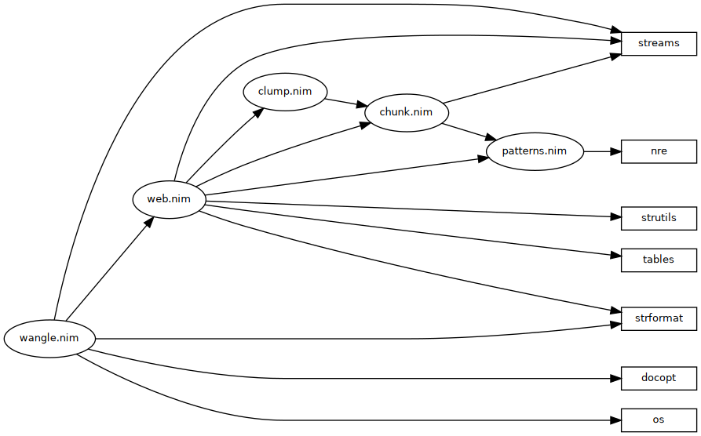

previous: Licence | up: Appendix

<<wangle.nim>>=
# <<LICENCE>>
import ospaths
import streams
import strformat
import docopt
import wanglepkg/web
<<cli>>
<<wanglepkg/patterns.nim>>=
# <<LICENCE>>
import nre except toSeq
export nre
<<patterns>>
<<wanglepkg/chunk.nim>>=
# <<LICENCE>>
# import nre
import streams
import patterns
<<common types>>
<<chunk type>>
<<chunk procs>>
<<wanglepkg/clump.nim>>=
# <<LICENCE>>
import sets
import chunk
<<clump type>>
<<clump procs>>
<<wanglepkg/web.nim>>=
# <<LICENCE>>
# import nre
import sets
import streams
import strformat
import strutils
import tables
import clump
import chunk
import patterns
<<exception type>>
<<context type>>
<<context procs>>
<<web type>>
<<web forward declarations>>
<<web procs>>